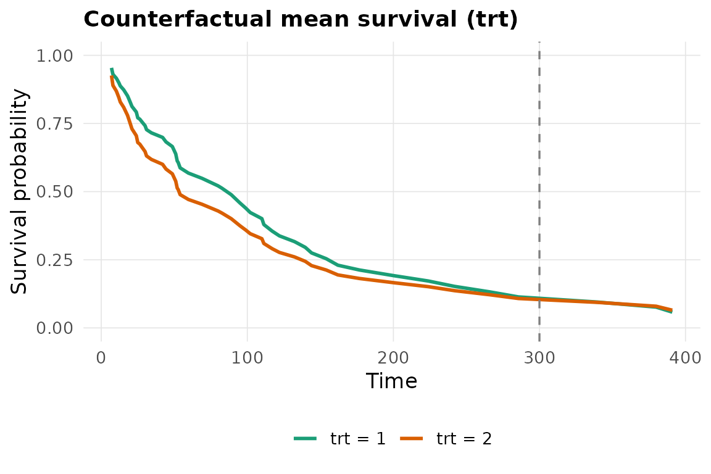

Standardised treatment contrasts with estimate()
Source:vignettes/causal-estimation.Rmd
causal-estimation.Rmdestimate() turns any survalis learner into a plug-in
G-computation (outcome-standardisation) estimator of a
covariate-adjusted contrast between the two levels of a binary
treatment.
What it computes
Given formula = Surv(time, status) ~ x1 + x2 (the
right-hand side lists the confounders) and
treatment = "a", estimate():
fits the working model
Surv(time, status) ~ a * (x1 + x2)with the chosen learner,sets
ato each level for every subject and predicts ,averages over subjects to get counterfactual mean curves ,
-
contrasts them into one of
estimandquantity "RMST_diff""RMST_ratio""survival_diff""survival_ratio"
Example
library(survalis)
est <- estimate(
Surv(time, status) ~ age + karno + celltype, data = veteran,
model = "coxph", estimand = "RMST_diff",
treatment = "trt", tau = 300,
R = 100, seed = 1
)
est
#> <survalis_estimate> RMST difference at tau = 300 (model: coxph)
#> treatment: trt (2 vs 1)
#> estimate: -14.3905 95% CI [-37.9061, 7.8690] (100 bootstrap, refit)
#> plug-in G-formula; causal reading needs exchangeability, positivity,
#> consistency, no interference and a correct outcome model.
plot(est)
Inference
The confidence interval is a nonparametric subject
bootstrap. By default (refit = TRUE) the working
model is refitted inside every replicate, so the interval reflects
model-estimation error as well as sampling variability. For an expensive
learner you can set refit = FALSE to get an interval that
is conditional on the fitted model – faster, but narrower than
it should be.
summary(est)
#> estimand tau estimate conf.low conf.high model
#> 1 RMST_diff 300 -14.39048 -37.90613 7.868977 coxphAssumptions
estimate() is a plug-in G-formula
estimator. It is not doubly robust and carries no protection
against outcome-model misspecification beyond the
treatment-by-confounder interactions it adds automatically. The estimate
has a causal interpretation only under:
- consistency – the observed outcome equals the potential outcome under the treatment actually received;
-
no unmeasured confounding given the covariates in
formula; - positivity – both treatment levels are possible for every covariate pattern;
- no interference between subjects;
- a correctly specified outcome model.
For a non-manipulable attribute (sex, a biomarker), read the result as a covariate-adjusted marginal contrast, not an effect.